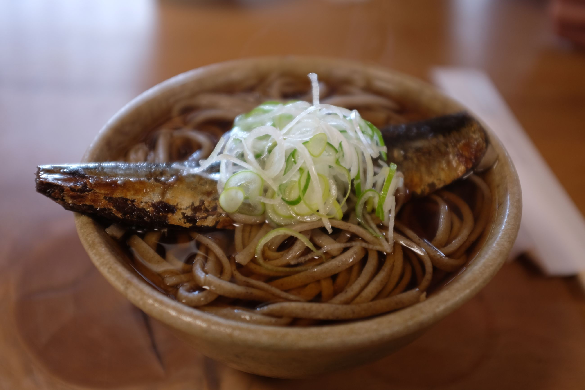
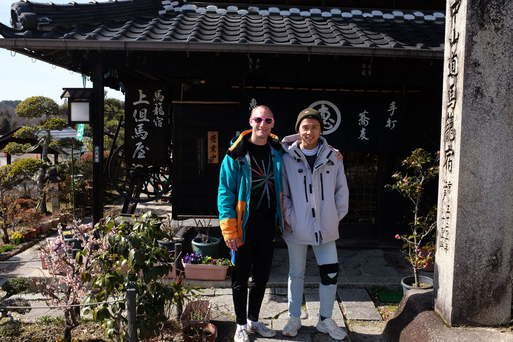
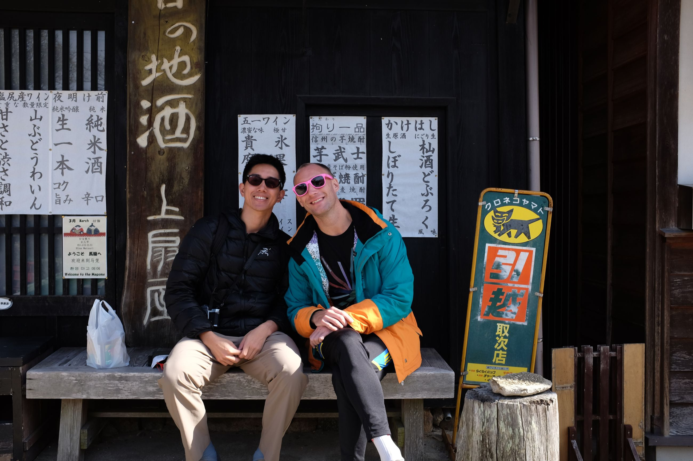
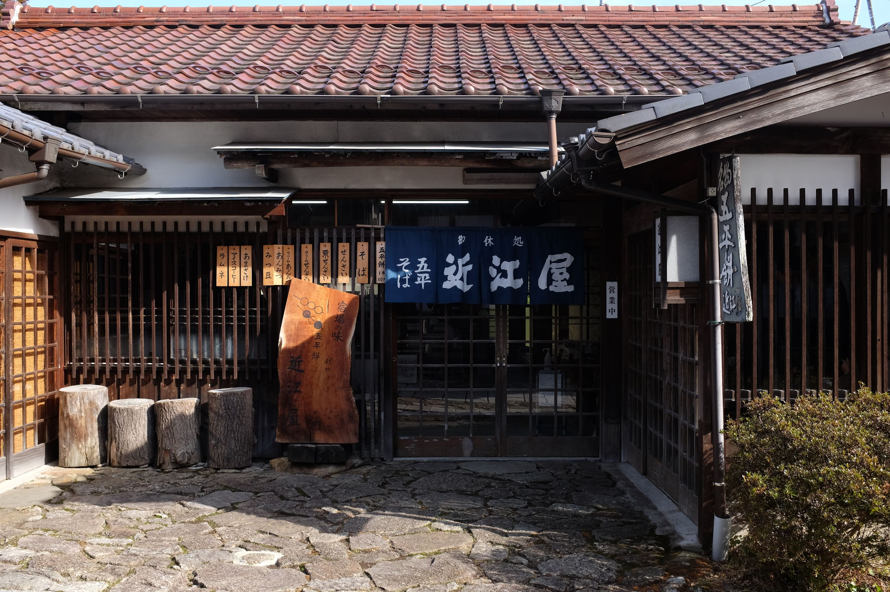
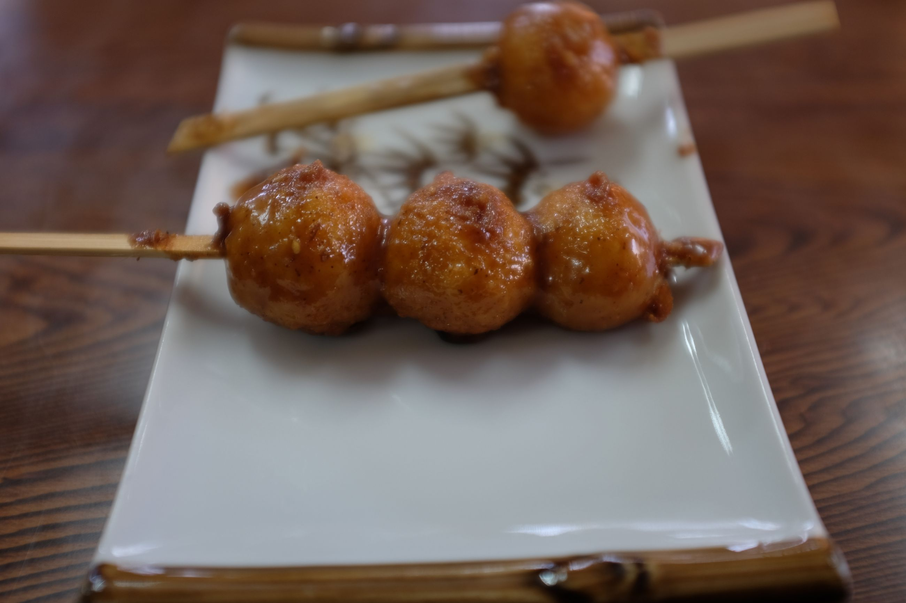
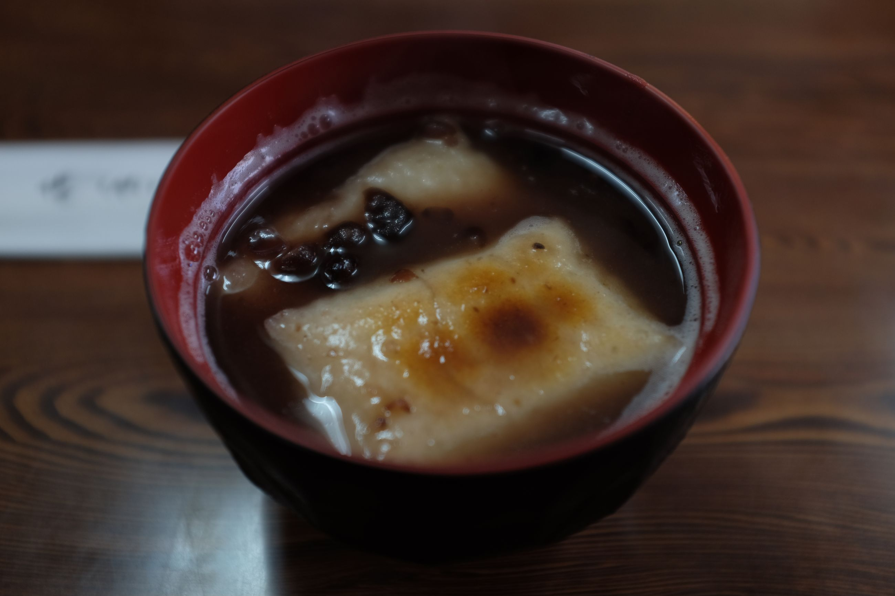
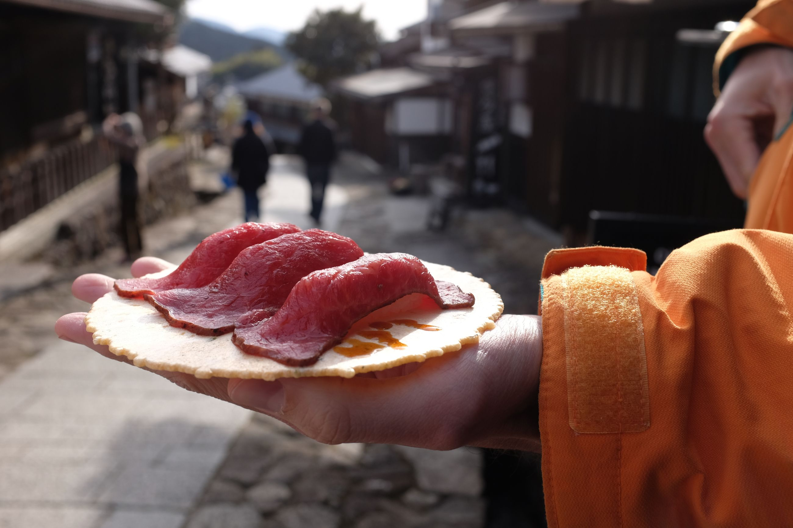
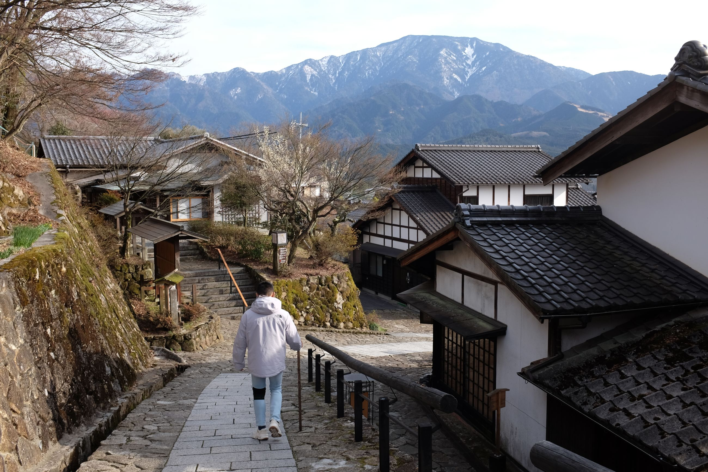
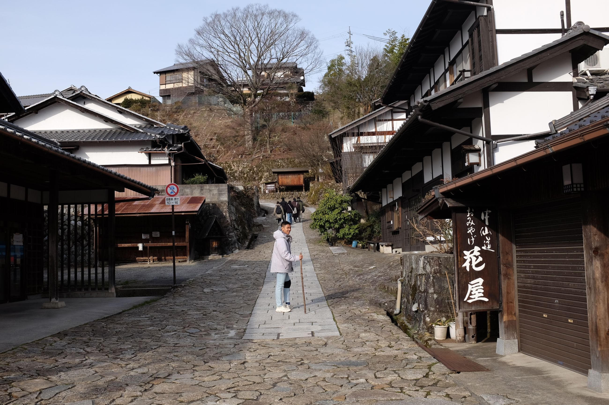

There is a trail called the Nakasendo (中山道) which connected Kyoto to Tokyo during the feudal era. On this trail, there were several small post towns along the way for travellers to rest. Magome is one of those town. It's a one-road town, about 600 meters. We see a lot of foreign-looking tourists here, with big backpacks, presumably walking the Nakasendo trail. As usual, we start off the journey with a soba meal. There is a small soba shop at the top of the town, near the connecting trail to Tsumago, the neighbouring town.

The shop itself is situated in a beautiful reconstructed house built in wood. As we walk through the town, it seems that the entire town has been restored. Most of the shopfronts look new, and the 600 meter road running through town looks freshly paved. While we descend down, we start with a few beers at a small shop brewing local beers.
 
In the town itself, there is a tourist information center, a post office, several museums (one dedicated to the writer Toson Shimazaki). Very developed. Despite this, it still offers the ambience of a "stopping by" town out in the Japanese countryside. All the shops here are small and quiet, with only tourists populating them. We stop by to have some Gohei Mochi (五平餅) which is a sort of onigiri-ish snack with a lovely soy sauce on it. We also have some of their chestnut dessert since they are known for that. In addition, we have seen people eat Hida beef sushi off of crackers, apparently a local thing, so we also tried that.
   
We spend in total about 3 hours here, just relaxing and taking a small walk. The newly restored architecture is amazing. At one tourist rest stop, someone had done an analysis on the types of tourists as well as the content from a visitor's signing book. The book covered the years 2013-2023, and in that time, Magome got only about 30,000 visitors who wrote in it, mostly from China, Taiwan, or Hong Kong (not even Japan). Most of them wrote about how peaceful Magome was, and how they were passing through. In the future, it would be nice to walk the Nakasendo.
 